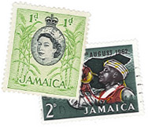
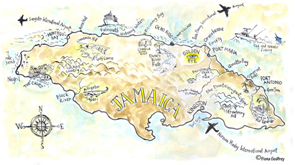
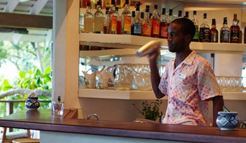

<!doctype html>
<!-- paulirish.com/2008/conditional-stylesheets-vs-css-hacks-answer-neither/ -->
<!--[if lt IE 7]> <html class="no-js ie6 oldie" lang="en"> <![endif]-->
<!--[if IE 7]>    <html class="no-js ie7 oldie" lang="en"> <![endif]-->
<!--[if IE 8]>    <html class="no-js ie8 oldie" lang="en"> <![endif]-->
<!-- Consider adding an manifest.appcache: h5bp.com/d/Offline -->
<!--[if gt IE 8]><!--> <html class="no-js" lang="en"> <!--<![endif]-->
<head>
  <meta charset="utf-8">

  <meta http-equiv="X-UA-Compatible" content="IE=edge,chrome=1">

  <title>GoldenEye Hotel &amp; Resort</title>
  <meta name="description" content="Welcome to GoldenEye Hotel & Resort, the tropical vacation getaway where writer Ian Fleming created James Bond in novels like Casino Royale, Live and Let Die, Dr. No, and Goldfinger. An Island Outpost development by Island Records founder Chris Blackwell, GoldenEye is near Oracabessa, Jamaica.">
  <meta name="keywords" content="GoldenEye Hotel & Resort, GoldenEye Hotel, GoldenEye Jamaica, Oracabessa, Island Outpost, Goldeneye Hotel, Goldeneye Resort, Goldeneye Jamaica Resort, Goldeneye Jamaica, Goldeneye in Jamaica, Golden Eye, Chris Blackwell, Chris Blackwell Hotels, Chris Blackwell Jamaica, Ian Fleming, James Bond, island resort, luxury resort Jamaica, Jamaica luxury resort, Jamaica villa, beach cottage, spa, beach villas, Pantrepant, Island Records, Jamaica, Caribbean, Tropical, Beach, Accommodations, Travel, swimming, snorkeling, fishing, jet ski, natural, vacation, holiday, Goldeneye Jamaica Rates, Goldeneye Oracabessa, Goldeneye Hotel Jamaica, Ian Fleming House, Jamaican Spa Hotel, Jamaican Resorts, Blackwell Rum, Jamaica Island Resort, Jamaica Private Resort, Jamaica Destination Wedding, Jamaica Honeymoon, Unique Private Villa Jamaica, Casino Royale, Live and Let Die, From Russia with Love, Goldfinger, For Your Eyes Only, You Only Live Twice, The Man with the Golden Gun, Diamonds are Forever, Octopussy, 007, Bond 007, Quantum of Solace, Dr. No, Bob Marley, Ian Fleming Jamaica, Ian Fleming resort, Island Outpost resort, eco resort, eco resort Jamaica, luxury eco resort, Jamaica hotel development, private residences Jamaica, Goldeneye development, Goldeneye cottage, Chris Blackwell resort, local community, lagoon, Jamaica coral reef, glamorous getaway, tropical getaway Jamaica, Jamaica real estate, Magnificent 11, Noel Coward, Fleming villa, private beach Jamaica, vacation home, Royal Palm, James Bond Beach, Firefly, James Bond Center, tree planting, Jamaican rum, Ann Hodges, Port Maria, Bond Beach, royal hut, Palm Pictures, Goldeneye Community Network, Goldeneye garden, St. Mary, Jamaican holiday, Blanche Blackwell, Goldeneye reopening, Chukka Cove, Jamaican retreat, island retreat, luxury tropical retreat, famous tropical resort, glamorous beach, luxury island, family vacation, child friendly, swimming pool, lagoon, ocean front, beachfront, on the beach, affordable, highly rated, pet friendly resort" />
  <meta name="author" content="Cappen">

  <meta name="viewport" content="width=device-width,initial-scale=1">

  <!-- CSS -->
  <link rel="stylesheet" href="style.css">
  <!-- end CSS-->

  <script src="js/libs/modernizr-2.0.6.min.js"></script>
  
</head>

<body>

  <div id="container">
    <header class="clearfix">
		<h1><a href="./" title="Home Page"></a></h1>
		
		<nav>
			<a href="javascript:;" title="Stay">Stay</a>
			<a href="javascript:;" title="Eat">Eat</a>
			<a href="javascript:;" title="Play">Play</a>
			<a href="javascript:;" title="Spa">Spa</a>
		</nav>
		
		<span class="tree"></span>
		
		<div class="reserv">
			<a href="javascript:;">Reservations »</a>
			<p>1-800-OUTPOST<br/><br/> Front DESK<br/> 876-622-9007</p>
		</div>
		
    </header>
    
    
    <div id="main" role="main" class="clearfix faq">
	
		
	 <div class="columns clearfix">

		<article class="content left">
			<figure>
				
			</figure>
			
			<dl id="freq">
				<dt><span>Hotel Information</span></dt>
				
				<dd>
					<figure class="right dir">
							
					</figure>
					
					<h3>What time is check-in? Checkout?</h3>
					<p>Check-in is at 3 p.m. Checkout is at noon. We do everything possible toaccommodate early arrivals and late departures.</p>
					
					<h3>What's the wireless/cell coverage?</h3>
					<p>We have Wi-Fi, wireless, cell coverage, and when the next new technology arrives, you can bet we'll have that, too.</p>
					
					<h3>How can I print, send faxes, etc.?</h3>
					<p>The business office is open daily from 7 a.m. to 9 p.m. and the staff is happy to help with all business services. (We'll even set you up with stamps for snail mail.)</p>
				
					<h3>What is the electrical currency at GoldenEye?</h3>
					<p>In Jamaica the electrical current is 110 volts, 50 cycles. Standard U.S. plugs work without adapters.</p>
					
					<h3>What should I know about housekeeping and laundry service?</h3>
					<p>Your housekeeper will come every day. Please let them know when you have laundry— place clothes in the laundry bag and fill out the form. It will be returned to you within hours.</p>
									
					<figure class="right dir" >
						
					</figure>				
									
					<p>In the evening your housekeeper will provide turn-down service and prepare your room for the night. Normally, rooms are left open for you to enjoy the breeze, the sound of the sea and nature's wonderful night noises. If you prefer to have your room closed and the air conditioner turned on, please leave instructions for your housekeeper to do so.</p>
					
					<p>In keeping with GoldenEye’s environmental philosophy, if you choose not to use the air conditioning during your stay, we will give you a rebate of US  per night, at the end of your stay.</p>
				
					<h3>Safety-deposit boxes—are they in the room?</h3>
					<p>Yes, every room has a mini safe for your valuables and important documents.</p>
					
					<h3>Do you have a kids policy?</h3>
					<p>Families with children of all ages are welcome at GoldenEye! There are more than 30 acres of gardens, woods, lagoons, caves and beaches for them to explore. Please note: Kids dining hour is 6:30 - 7:30 p.m.</p>
					
					<h3>Is there a policy for kid’s parties?</h3>
					<p>We love to help celebrate all occasions and will provide cakes, balloons, presents as well as special entertainment upon request.</p>
					
					<h3>Is there a babysitting service?</h3>
					<p>Yes. And your kids, will be safe and happy!  Should you need them, portable cribs, high chairs, baby monitors and other child and infant items are available at the front desk.</p>
					
					<figure class="left esq">
						
					</figure>
					
								
					<h3>Is there a dress code?</h3>
					<p>No jackets. No ties. (Flip-flops, yes!)</p>
					
					<h3>What should I pack?</h3>
					<p>Shampoo, conditioner, soap, Q-tips and cotton balls are all in your room. Sporting equipment? It's waiting for you. Books? We've got the entire James Bond series. And yes, there are plenty of backgammon sets. You could just jump on a plane and come!</p>
				
					<div class="clearfix"></div>
				
					<h3>I love the batik beach towels and bathrobes at GoldenEye!<br/>
					Where are they from? Can I take one home?</h3>
					<p>The beautiful batik towels and the robes hanging in your closet are from Mary Vinson’s Royal Hut, founded by Mary Vinson Blackwell. You can purchase them in our gift shop or order them on the site www.royalhut.com, where you can also find our signature batik border towels, 400 thread count hand-dyed sheets, Nigerian-print place mats and other vibrantly patterned signatures of GoldenEye.</p>
					
					<figure class="right dir">
						
					</figure>
					
					<h3>The music at GoldenEye is amazing!<br/>
					Where can I find it?</h3>
					<p>Bruno Guez who founded Quango Records and works closely with Blackwell, has programmed all the music at GoldenEye. You can access Bruno’s playlists and more on the Logitech Squeezebox found in every room.</p>
					
					<h3>How can I read what the press has written about GoldenEye?</h3>
					<p>Visit GoldenEye Press.</p>

					<h3>Are there other GoldenEye resorts?</h3>
					<p>No. GoldenEye is unique. However, there are other Island Outposts. They include Strawberry Hill, The Caves and Geejam, as well as private villas, all located in Jamaica. The atmosphere at every Island Outpost property is casual and friendly. Fresh local food, and efficient and unobtrusive service, are hallmarks of each. And the Island Outpost properties share a common sensibility that makes them appealing to the sophisticated, laid-back traveler—seeking a personal and relaxed experience. Just like you feel when staying in the home of good friends.</p>
					
					<p>Here's what Condé Nast Traveler has to say about Island Outpost properties: Like a close-knit family of wildly attractive, intelligent and anarchic kids, they are utterly independent and quite impossible to separate from one another. But something they have all inherited is Blackwell's easy charm, his amused and iconoclastic view of the world, his sense of fun and style, his instinct for beauty.</p>
					
					<p>For more information, visit <a href="http://www.islandoutpost.com" target="_blank" title="Island Outpost">www.islandoutpost.com</a>.</p>
					
					<p>In keeping with GoldenEye’s environmental philosophy, if you choose not to use the air conditioning during your stay, we will give you a rebate of US  per night, at the end of your stay.</p>
					
					<div class="backTop clearfix">
						<a href="javascript:;" id="toTop">Back to Top</a>
					</div>
				</dd>
				
				
				<dt><span>Location &amp; Logistics</span></dt>
				<dd>
					<figure>
						
					</figure>
					
					<h3>How do I get from the airport to GoldenEye?</h3> 
					<p>We are happy to arrange your transportation to GoldenEye. There are three options:</p>

					<p>From Montego Bay: it takes about an hour and 30 minutes to get from Montego Bay Airport to GoldenEye and costs  each way for a maximum of four passengers.</p>
					
					<p>From Kingston: The drive from Kingston to GoldenEye takes about two hours and costs  each way.</p>
					
					<p>From Ian Fleming International Airport: it’s a quick zip from IFIA to GoldenEye. It is a short flight on one of the commuter planes that fly between Ian Fleming International and Montego Bay. We are happy to arrange flights for you.</p>
					
					<p>There are several reliable car rental companies in Jamaica including Island Car Rentals, Avis and Hertz. Call the front desk to arrange. Click to print detailed driving instructions from all three airports to GoldenEye (and check out our picks for best places to stop along the way).</p>
					
					<h3>How much do airport transfer fees cost?</h3>
					<p> one way from Kingston Airport;  one way from Montego Bay Airport.</p>
					
					<figure>
						
					</figure>
					
					<h3>From which cities can I fly direct to Jamaica?</h3>
					<p>From Europe: There are more direct daily flights between the U.K. and Jamaica than any other European city. Check for charter flights from: Vienna and Salzburg (Austria); Brussels (Belgium); Prague (Czech Republic); Copenhagen (Denmark); Marseilles and Paris (France); Dusseldorf, Frankfurt, Munich and Berlin (Germany); Athens (Greece); Budapest (Hungary); Milan and Rome (Italy); Amsterdam (Netherlands); Warsaw, Krakow and Gdansk (Poland); Lisbon and Porto (Portugal); Madrid, Bilbao and Barcelona (Spain); Geneva, Basel and Zurich (Switzerland); Moscow (Russia). </p>
					
					
					<h3>Can you tell me some of the airlines that fly charters to Jamaica during the high season?</h3>
					<p>Airlines include: Condor (condor.com) from Frankfurt, Air Berlin (airberlin.com) from Dusseldorf (Germany); Jet Air Fly (jetairfly.com) from Brussels (Belgium); Arke Fly (arkefly.com) from Amsterdam (Netherlands); Blue Panorama (blue-panorama.com) and Neos (neosair.it) from Milan, Air Italy (airitaly.com) from Rome (Italy); Look Voyage (lookvoyage.com) from Paris (France). </p>
					
					
					<h3>Can I get to GoldenEye on my boat?</h3>
					<p>Of course!</p>
					
					<p>18 degrees 24.425 north<br/>
						07657.20 west</p>
					
					<p>These are the coordinates for GoldenEye, given by the Jamaican Coast Guard. Yachts have direct access into Oracabessa Bay, but, of course, your captain knows this as well as immigration and customs procedures.</p>
					
					<figure>
						
					</figure>
					
					<h3>Can I take a helicopter to GoldenEye?</h3>
					<p>Yes! Coming in via heli is the best way to take in the serpentine coastline. And the helipad is right on the property. It’s just a 25-minute flight from Montego Bay, and we are, of course, happy to book your flight for you.</p>
					
					
					<h3>Do I need a visa, in addition to a passport?</h3>
					<p>For U.S., Canadian and U.K. citizens, a valid passport is the only documentation required. As for visitors from other countries, you may need a visa. We are happy to look into requirements and advise you in advance of your visit.</p>
					
					<h3>Where, exactly, is GoldenEye?</h3>
					<p>GoldenEye sits on a bluff facing the Caribbean Sea in the quiet village of Oracabessa on Jamaica’s fabled North Coast. This dramatic coastline—with secret coves, private beaches and a lagoon—is unlike any other in the world.</p>
					
					<h3>What is GoldenEye's address?</h3>
					<p>Oracabessa, St. Mary, Jamaica<br/>
						Tel: 876.622.9007 Fax: 876.622.9008<br/>
						E-mail: info@goldeneye.com</p>
					
					<h3>What is the weather like at GoldenEye?</h3>
					<p>The average temperature is 77°F (25.5°C) during the winter months and 82°F (28°C) in the summer. February is the coolest month, while July and August are warmest. On the North Coast, where GoldenEye is located, the morning and evening tradewinds blow in off the Caribbean Sea and cool down the property naturally. Yes, it does rain. But showers are usually brief, dramatic and followed by hours of lovely sunshine. And the water? The turquoise blue Caribbean Sea is always warm, inviting and refreshing, with temperatures averaging between 80°F (26.6°C) about 84°F (28.8°C). </p>
					
					<h3>What is the time zone in Jamaica?</h3>
					<p>Jamaica is on Eastern Standard Time. The island does not change its clocks for Daylight Savings Time. That means that in summer, Jamaica is on U.S. Central Time.</p>
					
					<figure>
						
					</figure>
					
					<h3>What is the local currency?</h3>
					<p>Jamaica is home to the JMD, otherwise known as the Jamaican dollar. Not that you need to worry about this. Everything at GoldenEye, and most other places, can be paid for in US dollars. Still, it’s nice to keep some colorful JMD in your wallet, should you want to stop for a jelly (coconut water) or a cup of fish tea while out on a drive.</p>
					
					<h3>Should we be worried about staying safe in Jamaica?</h3>
					<p>We promise, you won’t feel anything but safe during your stay. Our staff loves GoldenEye, has worked here for years and call it their home. The town of Oracabessa, in which GoldenEye is located, is a lovely, sleepy country town. Plus you when you go off exploring the island, we’ll send you with a guide who’s on home turf.</p>
					
					<h3>Is the water safe to drink?</h3>
					<p>Yes, the water in Jamaica is safe. We provide bottled water for a better taste, but you can brush your teeth, shower, etc. and not think twice.</p>
					
					<div class="backTop clearfix">
						<a href="javascript:;">Back to Top</a>
					</div>
				</dd>
				
				<dt><span>Activities</span></dt>
				<dd>
					<figure>
						
					</figure>
					
					<h3>Is there a pool?</h3>
					<p>The best pool at GoldenEye is the Lagoon. Think of it as a 250 meter pool! Part seawater and part fresh spring water, the Lagoon is always warm, always clear and almost always completely tranquil. It's ideal for either splashing around or swimming laps. (Four laps equal a kilometer.) Additionally, there is the fresh water pool at the Bizot Bar, and the signature GoldenEye splash pool, both on Low Cay Beach. Fleming Villa has it’s own, private fresh water pool. </p>
					
					<h3>What should we know about the the beaches at GoldenEye?</h3>
					<p>Low Cay Beach is the main beach at GoldenEye—500 smooth, sandy feet of beach shaped like a French croissant. Wata Sport Beach, located just below the Gazebo, is the headquarters for all water sports activities. Our water sports guides, helpers and instructors are trained lifeguards and skilled sailors. They will arrange for everything from beach towels and snorkeling equipment to kayaks, glass-bottom boat rides and Jet Skis. Speak with any of them if you are interested in lessons or would like to go snorkeling on the many coral reefs close by.</p>
					
					<figure class="left esq">
						
					</figure>
					
					<h3>What are some of the most popular activities for guests visiting GoldenEye?</h3>
					<p>Swimming. Sunning. Snorkeling. Kayaking. Paddle boarding. Jet Skiing. Wave running. Deep-sea fishing. Pole fishing. Birding. Nature walking. Scuba diving, Horseback riding. Arts and crafts. Backgammon. Tennis. Trips around the island, including an afternoon-into-evening visit to Firefly...</p>			
								
					<h3>What is Firefly? Why should we visit?</h3>
					<p>Firefly has the most stunning view in the Caribbean. The property has a magical legacy that spans centuries and has been both sacred and strategic, prized by all who have lived there—from the island’s indigenous people, the Taino, to the notorious pirate-turned-governor-turned-posthumous Sir Henry Morgan.</p>
					
					<p>In 1948, Noël Coward the celebrated wit, playwright, composer, director, actor, singer and one of the great est social figures of the 20th century acquired the property. Originally called Lookout, Coward renamed his Jamaican home, Firefly. Firefly, which stands today just as Coward designed it,  is a modest, modern house however, its history is grand. Over the 20 year period when Coward was in residence, he entertained the most glamorous personalities of his day, from movie stars to literary greats and even Britain’s Queen Mum, who famously stopped in for lunch on her 1965 trip to Jamaica.</p>
					
					<p>Firefly is just about five miles, and a 15-minute drive, from GoldenEye. It is the ideal place to throw a big party (it’s especially popular for weddings) or to visit for an relaxing afternoon picnic. Plan to stay for sunset, when the bright pink, dusky blue and deep gold light show in the sky gets under way.</p>
					
					<p>The front desk will arrange your visit to Firefly.</p>
										
					<div class="clearfix"></div>					
										
					<figure class="right dir">
						
					</figure>					
										
					<h3>Michael Caine, Kate Moss, Quincy Jones, Johnny Depp… they’ve all planted trees at GoldenEye. How can I?</h3>	
					<p>You can plant a tree at GoldenEye by making a donation of U.S. $1,000 to the Oracabessa Foundation, which works with the town of Oracabessa on sustainable, local development.</p>				
										
					<div class="clearfix"></div> 
										
					<div class="backTop clearfix">
						<a href="javascript:;">Back to Top</a>
					</div>
				</dd>
				
				<dt><span>Dining</span></dt>
				<dd>
					<figure class="left esq">
						
					</figure>
				
				<h3>Everyone raves about the food at GoldenEye. What makes it so good?</h3>
				<p>It’s simple. It’s home-cooked. It’s local. It’s fresh. Traditional Jamaican cuisine, like we serve at GoldenEye, is a fusion of cultures and influences. (Nowhere is the country’s motto Out of many, one people" more apt than when discussing Jamaican cuisine!)</p>
				<p>Every day, dishes on our menu are cooked with fresh seasonal fruits and vegetables organically grown at Pantrepant, our farm in the Trelawny Parish mountains. We buy fresh fish and lobster daily from local fishermen. Jamaica’s herbs and spices— including the fiery Scotch bonnet pepper, pimento, nutmeg, ginger, tamarind and sweet coconut—are world famous. Tropical fruit, such as june plum and soursop, are not only unique to the area, they’re also unforgettably luscious!</p>
				<p>If you have any special requests, specific dietary requirements or restrictions, just let us know.</p>

					<figure class="right dir">
						
					</figure>

					<h3>Where are meals served? When?</h3>
					<p>Breakfast and lunch are served at the Bizot Bar overlooking the Caribbean, while dinner is served at the Gazebo restaurant, overlooking the Lagoon.</p>
					<p>Dining hours are flexible; please let us know if you have special requests. Dinner for kids is served 6:30-7:30 p.m. And should you prefer, we’re happy to serve your meals in the privacy of your suite, cottage or villa.</p>

					<h3>What about bar service? Where is the bar, and do you serve any special drinks I should know about?</h3>
					<p>You can’t miss the Bizot Bar, because the sounds of laughter, chit-chat and deep dub reverb echo in the warm air, making it one of the happiest, most-happening spots at GoldenEye.</p>
					
					<figure>
						
					</figure>
					
					<p>Chances are, half the crowd will be holding the crushed ice, lime and rum cocktail called the GoldenEye (the same drink you were gratefully served upon your arrival). And the rum? Blackwell’s Fine Jamaican Rum. Now, how many hotels serve a rum “homemade” on property—by the proprietor?</p>
										
					<figure class="right dir">
						
					</figure>
					
					<h3>What’s the story behind Blackwell’s Fine Jamaican Rum?</h3>
					<p>Since the 17th century, Island Outpost founder Chris Blackwell’s family have called Jamaica home. In 1916, they went into the rum trade. Today, after tinkering around with some old family recipes, Blackwell has created a new rum inspired by the old-style, richly favored recipe that made Jamaican rum world-famous.</p>
					<p>Blackwell’s Fine Rum is now available in select cities throughout the US. That it was made at GoldenEye makes drinking it right here, on this very spot, that much more tasty.</p>

					<div class="clearfix"></div>
						
					<div class="backTop clearfix">
						<a href="javascript:;">Back to Top</a>
					</div>
				</dd>
				
				
				<dt><span>Owning at GoldenEye</span></dt>
				<dd>
					<h3>Can non-Jamaicans purchase property in Jamaica?</h3>
					<p>Yes! There are no restrictions on foreigners owning property in Jamaica. Additionally, there are no foreign exchange restrictions currently in Jamaica. Therefore, anyone can send money to Jamaica and from Jamaica, subject to the prevailing exchange rates at the time of transaction, and the Financial Institution being used.</p>
					
					
					<h3>What are the purchaser’s costs in buying property?</h3>
					<p>The purchaser’s cost will range between approximately 5% and 10% of the purchase price with a breakdown as follows:</p>
					
					<ul>
						<li>1/2 Stamp Duty: 1.5% of the purchase price.</li>
						<li>1/2 Registration Fee: .25 % of the purchase price.</li>
						<li>Purchaser’s Attorney’s fees on Transfer: 2 – 4% of purchase price + General Consumption Tax on these attorney’s fees (17.5%).</li>
						<li>1/2 Vendor’s attorney’s cost for preparing the Agreement of Sale +  General Consumption Tax on these attorney’s fees (17.5%).</li>
					</ul>
					
					<p>* If financing is being sought this will also add to the purchasers costs.</p>
					
					<h3>How is property tax evaluated in Jamaica?</h3>
					<p>Property tax is based on the unimproved value of the land, resulting in nominal annual real estate taxes.</p>
					
					<h3>Is it necessary to retain an attorney to act in the transfer of real estate?</h3>
					<p>Jamaican law requires that a vendor retain an attorney to draw up the agreement for sale and to oversee the process until the transfer has been completed.</p>
					<p>A purchaser however is not required to retain an attorney and can act on his/her own behalf in the transaction. It is however recommended that purchasers employ an attorney at law to act on their behalf.</p>
					
					<h3>How long does a sale transaction take?</h3>
					<p>If it is a cash purchase, the transaction cannot take less than 30 days, but usually can be concluded within 60 days. If it will be financed by a mortgage it will take a minimum of 90 days, depending on how quickly the requirements of the lending institution are satisfied. </p>
					
					<h3>If something happens and the purchaser cannot complete the sale will the purchaser lose the down payment?</h3>
					<p>A purchaser is required to pay 10% at the signing of the Reservation Agreement to hold the unit in question.  If the purchaser decides not to move forward in advance of executing the overall Sales Agreements, the 10% reservation deposit shall be refunded.</p>
					
					<h3>Are there restrictions on how many days a year a home owner can spend at GoldenEye? </h3>
					<p>No!  We really hope GoldenEye will be your home away from home.  You can use it as often as you like.  We just ask that you provide us a schedule of your anticipated dates a year in advance.</p>
					<p>Of course the more the residence is available for resort purposes, the more a homeowner will stand to make on their house.</p>
					
					<h3>Do homeowners get access to the resort?</h3>
					<p>Yes!  Homeowners have the right to use the beach, pools, and all other public areas of the property.  They can also use all non-motorized water sports equipment, etc. that our guests enjoy free of charge.</p>
					
					<h3>As a homeowner, what share of the income do I receive if my residence is put in the pool to be used for resort purposes?</h3>
					<p>Island Outpost takes a 20% sales and marketing fee on the net room revenue and then all proceeds are split 50/50 between GoldenEye and the homeowner. After this split, both GoldenEye and the homeowner both reserve 2.5% in a sinking fund to be used for repairs on the residence.</p>
					
					<h3>What are the maintenance fees?</h3>
					<p>Currently the maintenance fees are as follows:</p>
					
					<ul>
						<li>One Bedroom Beach Cottage: $400/month</li>
						<li>Two Bedroom Beach Cottage: $600/month</li>
						<li>One Bedroom Lagoon Suite:  $300/month</li>
					</ul>

					<p>The maintenance fees are paid on a quarterly basis and are deducted from any proceeds otherwise due to the homeowner.</p>
					
					<h3>Are there any other fees or expenses associated with ownership?</h3>
					<p>In addition to maintenance and the nominal real-estate tax mentioned above, all home owners are required to pay for their insurance and utilities. However, please note that GoldenEye takes care of all expenses on the homeowner’s behalf and deducts these amounts from the quarterly funds remitted to the homeowner.</p>
					<h3>Can non Jamaicans qualify for financing in Jamaica?  And if so, what documents pertaining to the property do financial institutions require from the purchaser in order to process a loan application?</h3><br/>
					
					
					<ul>
						<li>Yes!  Non Jamaicans can qualify for financing.  The documents required are as follows:</li>
						<li>A signed agreement for sale.</li>
						<li>A recent appraisal / valuation report.</li>
						<li>A recent surveyor’s identification report.</li>
						<li>Proof of payment of up to date water bill.</li>
						<li>A certificate of payment of property taxes.</li>
						<li>In some cases where applicable, proof of payment of insurance and maintenance charges.</li>
					</ul>
						
					<div class="clearfix"></div>
						
					<div class="backTop clearfix">
						<a href="javascript:;">Back to Top</a>
					</div>
				</dd>
				
				<dt><span>GoldenEye Policies</span></dt>
				<dd>
					<h3>What are your booking policies?</h3>
					<p>Booking is subject to availability. Rates are quoted in U.S. dollars, per cottage, per night and do not include 10% service charge and 10% government tax. Nightly rates are based on double occupancy per bedroom and include full breakfast. </p>
					
					<h3>What is the GoldenEye payment policy?</h3>
					<p>A deposit of three night’s payment is required upon making a reservation. Final payment is due in full 30 days before your arrival date. All rates are based on double occupancy.</p>
					
					<h3>What is the payment policy for additional guests and kids?</h3>
					<p>Additional adults or children sharing a cottage on daybeds or sofas attract a supplementary charge of $50.00 per person, per night (plus 10% tax and 10% service charge). This supplement includes breakfast.</p>
					
					<h3>What is the GoldenEye cancellation policy?</h3>
					<p>If you cancel 45 days before your arrival, the three-night deposit is refunded in full. If you cancel less than 45 days before your arrival, the deposit is non-refundable. If you cancel 30 days before your arrival or less (or if you are a no-show), you forfeit the final payment for the balance of your stay.</p>
					
					<p><em><u>Note</u>: A reservation will not be considered canceled until you have received a cancellation number from an Island Outpost representative.</em></p>
					
					<h3>What are your holiday policies?</h3>
					<p>10-night minimum stay over Christmas and New Years. 5-night minimum stay over other U.S. and U.K. holidays.</p>
					
					<h3>Are there any other policies I should know about?</h3>
					<p>GoldenEye is a very special resort. Unlike other hotel properties, it's not built to a cookie cutter plan; rather, it follows the natural contours of its lush and rugged terrain. In developing the property, we have tried to keep the integrity of the natural land. This means there are roads that might be uneven and definitely unpaved. We ask that you keep this in mind when reading through our waiver—and that you remain aware that we do everything possible to ensure our guests’ safety during a trip to any of the Island Outpost properties. What follows is our liability policy. You will receive this along with your confirmation email, and will be asked to sign upon arrival to the resort.</p>

					<p class="center">ISLAND OUTPOST LIMITED PROPERTIES <br/> RELEASE OF LIABILITY, HOLD HARMLESS COVENANT NOT TO SUE AND <br/> INDEMNIFICATION AGREEMENT<br/> PLEASE READ CAREFULLY BEFORE SIGNING DOCUMENT<br/> THIS IS A RELEASE OF LIABILITY AND WAIVER OF CERTAIN LEGAL RIGHTS </p>

					<p>In consideration, and as a requirement, for being permitted as a guest on any property managed, operated or owned by Island Outpost LLC, or its affiliated companies, including, but not limited to, The Caves, Geejam, GoldenEye Hotel &amp; Resort, Pantrepant, or Strawberry Hill (hereinafter the “Resort”) the undersigned (hereinafter collectively referred to as “Guest(s)”) has been advised of, and agrees to, the following: </p>
				
				<p><span class="rom">I.</span> <u>NOTIFICATION OF RISKS</u></p>
				
				<div class="padTwo">
					<p><strong>A. Natural Surroundings:</strong></p>
					
					<p>The Resort properties are set in natural environments.  Buildings, walkways, roads boat docks, patios, courtyards and steps are incorporated into the natural environment and, are therefore, uneven in height and width, uneven in surface texture, transition from one material and ground type to another, and are generally designed to blend into the natural environment.  Furthermore, encountering water from natural drainage, the ocean, falling or accumulated rain and swimming pools is a common occurrence while staying at the Resort. Dangerous wildlife and insects, in the water, or on land, may be encountered from time to time.  Finally, traveling to and from the Resort, by bus or motor vehicle, can be dangerous due to road and travel conditions.  Guest(s) recognizes and accepts that the situations described in this paragraph (hereinafter collectively referred to as the “Natural Surroundings”) may pose hazardous or dangerous conditions that could result in SERIOUS INJURY or DEATH.</p>
					
					<p><strong>B. Resort Activities:</strong></p>
					
					<p>The Resort makes a number of Activities available to Guest(s).  These Activities take place both on and off the Resort property, as well as in the ocean and in pools.  These Activities include, but are not limited to:  aerobics; boating - motorized or non-motorized; cycling; diving, from a cliff, diving board or other point of elevation; interaction with and petting of domesticated livestock; jogging; jet ski operation, as a rider or passenger; massage; pool games; riding on donkeys, horses or mules; running; sailing; scuba diving; sea kayaking; snorkeling; spa treatments; spelunking; swimming; swings; tennis; tubing; volleyball; water aerobics; water slides, windsurfing and yoga (hereinafter collectively referred to as the “Resort Activities”).  Guest(s) recognizes and accepts that participating in these Activities may be dangerous and could result in SERIOUS INJURY or DEATH.</p>
				</div>
				
				<p><span class="rom">II.</span><u>ASSUMPTION OF RISK</u></p>
				
				<div class="padTwo">
					<p>Guest(s) assumes all risks associated with the Resort’s Natural Surroundings while on the Resort property or while traveling to and from the Resort.  Furthermore, Guest(s) assumes all risks stemming from participating in any Resort activity made available while a guest or invitee of the Resort.</p>
				</div>
				
				<p><span class="rom">III.</span><u>INDEMNIFICATION</u></p>
				
				<div class="padTwo">
					<p>Guest(s) hereby agrees to hold harmless, release, defend and indemnify the Resort and any of its agents, assigns, affiliates, directors, employees, officers, operational entities, owners, parent companies or related companies, whether in Jamaica or elsewhere, (hereinafter collectively referred to as the “Releasees”) from any liability, claims, demands, actions and causes of action whatsoever arising out of or related to any property loss, damage or any injury, including SERIOUS INJURY or DEATH, that may be sustained by Guest(s), including, but not limited to, those injuries and damages caused by the negligence and/or breach of warranty, express or implied on the part of Releasees.</p>
				</div>
				
				<p><span class="rom">IV.</span><u>RELEASE FROM LIABILITY AND COVENANT NOT TO SUE</u></p>
				
				<div class="padTwo">
					<p>In consideration for being admitted as a guest, Guest(s) agrees to forever discharge and release from any legal liability and to not sue the Releasees for property damage or any injuries, including SERIOUS INJURY or DEATH, caused by, related to or resulting from, the Natural Surroundings and  /or Resort Activities.</p>
				</div>
				
				<p><span class="rom">V.</span><u>MEDICAL AUTHORIZATION</u></p>
				
				<div class="padTwo">
					<p>Guest(s) authorizes the Releasees to call medical care for Guest(s), or to transport Guest(s) to a medical facility or hospital if, in the opinion of Releasees, medical attention is necessary. Guest(s) agrees that, upon such transport to any medical facility or hospital, Releasees shall not have any further responsibility. Furthermore, Guest(s) agrees to pay all cost associated with such medical care and related transportation, and to indemnify and hold harmless Releasees for any costs incurred or injury or damage sustained as a result of transportation to a medical facility or hospital.</p>
				</div>
				
				<p><span class="rom">VI.</span><u>FORM SELECTION</u></p>
				
				<div class="padTwo">
					<p>Guest(s) contractually agrees that all claims whatsoever asserted against Releasees, arising from, in connection with, or incidental to this contract, or Guest(s)’ stay at or travel to, or from, the Resort, including, but not limited to: any claims relating to the formation; interpretation; construction; waiver; modification; performance; discharge or breach of contract; or the existence, extent, or breach of any fiduciary duty; or any duty in tort or any claims whatsoever arising from, in connection with, or incidental to any personal injury, illness, or death shall be litigated solely and exclusively in the courts of Jamaica, and shall be governed by Jamaican law without regard to any choice of law principles thereof.</p>
				</div>
				
				<p><span class="rom">VII.</span><u>SEVERABILITY AND ENFORCEABILITY</u></p>
				
				<div class="padTwo">
					<p>In the event any section of this Release is found to be unenforceable, that section shall be stricken, but the remaining terms shall remain fully enforceable, and shall be binding to the fullest extent permitted by Jamaican law.</p>
				</div>
				
				<p><span class="rom">VIII.</span><u>CAPACITY TO CONTRACT</u></p>
				
				<div class="padTwo">
					<p>Guest(s) certifies his or her signature that he or she is at least 18 years of age and has the full mental capacity to enter into this Release or that if he or she is the parent or legal guardian of a minor guest at the Resort, he or she has legal authority to execute this Release on said minor’s behalf.</p>
				
				<p><strong>GUEST(S) HAS READ THE FOREGOING RELEASE OF LIABILITY, HOLD HARMLESS COVENANT NOT TO SUE AND INDEMNIFICATION AGREEMENT, UNDERSTANDS ITS CONTENTS AND SIGNS IT WITH FULL KNOWLEDGE OF ITS SIGNIFICANCE.</strong></p>
				</div>
				
					<div class="clearfix"></div>
					<div class="backTop clearfix noBorder">
						<a href="javascript:;">Back to Top</a>
					</div>				
				</dd>
			</dl>
			
		</article>	
		
		<aside class="left">
			<h2>The Basics</h2>
			
			<p><span class="darkBlue"><strong>Location:</strong></span><br/>
 			GoldenEye is located in Oracabessa Bay, in the parish of St. Mary, on the north coast of Jamaica</p>
			
			<p><span class="darkBlue"><strong>Best Route to GoldenEye:</strong></span><br/>
				We suggest guests fly into Montego Bay airport as the drive to GoldenEye is both faster and more scenic. We will of course arrange for a driver to meet you at flight arrivals</p>
			
			
			<p><span class="darkBlue"><strong>Airports:</strong></span><br/>
				Sangster International Airport<br/>
				Montego Bay (73 miles)</p>
			
			<p>Norman Manley International<br/>
				Kingston (57 miles)</p>
			
			<p>Ian Fleming International / <br/>
				private aviation<br/>
				Boscobel (2.7 miles)</p>
			
			<p> <span class="darkBlue"><strong>Contact Us: </strong></span><br/>
				Telephone 1-800-OUTPOST</p>
			
			<p>Telephone Front Desk<br/>
			876-622-9007</p>
			
			<p>Email<br/>
				info@goldeneye.com</p>
			
			<p> <span class="darkBlue"><strong>Map of GoldenEye: </strong></span><br/>
				Download PDF</p>
			
		</aside>
		
	 </div>	<!-- columns -->
		
			
			
	</div><!-- /main -->
    
    <footer class="clearfix">
    	<p class="rosa">More GoldenEye:</p>
		
		<nav>
			<a href="javascript:;" title="About U">About Us</a>
			<a href="javascript:;" title="News & Events">News & Events</a>
			<a href="javascript:;" title="Occasions">Occasions</a>
			<a href="javascript:;" title="Packages">Packages</a>
			<a href="javascript:;" title="FAQ">FAQ</a>
			<a href="javascript:;" title="Press & Awards">Press & Awards</a>
			<a href="javascript:;" title="Getting to GoldenEye">Getting to GoldenEye</a>
			<a href="javascript:;" title="Own">Own</a>
			<a href="javascript:;" title="Contact">Contact</a>
		</nav>
		
		<div class="siteMap">
			<ul class="first">
				<span></span>
			</ul>
			<ul class="second">
				<span></span>
				<li><a href="javascript:;" title="Trip Advisor">Trip Advisor</a></li>
				<li><a href="javascript:;" title="Twitter">Twitter</a></li>
				<li><a href="javascript:;" title="Facebook">Facebook</a></li>
			</ul>
			<ul class="third">
				<span></span>
				<li><a href="javascript:;" title="Trip Advisor">Trip Advisor</a></li>
				<li><a href="javascript:;" title="Twitter">Twitter</a></li>
				<li><a href="javascript:;" title="Facebook">Facebook</a></li>
			</ul>
			<ul class="fourth">
				<span></span>
				<li><a href="javascript:;" title="Trip Advisor">Trip Advisor</a></li>
				<li><a href="javascript:;" title="Twitter">Twitter</a></li>
				<li><a href="javascript:;" title="Facebook">Facebook</a></li>
			</ul>
			<ul class="fifth">
				<span></span>
			</ul>
			
			<div class="newsletter">
				<form action="" class="clearfix">
					<input type="text" id="email" name="email" value="Enter email address" class="clearinput" />
					<input type="submit" id="go" name="go" value="" />
				</form>
				<p>Subscribe to <br/>
				our newsletter</p>
			</div>
		</div>
		
    </footer>
  </div> <!--! end of #container -->


  <script src="//ajax.googleapis.com/ajax/libs/jquery/1.6.2/jquery.min.js"></script>
  <script>window.jQuery || document.write('<script src="js/libs/jquery-1.6.2.min.js"><\/script>')</script>

  <!-- scripts -->
  <script defer src="js/plugins.js"></script>
  <script defer src="js/script.js"></script>
  <script defer src="js/jquery.clearinput.js"></script>
  <script defer src="js/jquery.color.js"></script>
  <script defer src="js/scrolltopcontrol.js"></script>
  <!-- end scripts-->
  
  <script> 
	  $(function(){
		$('.clearinput').clearInput();
	  })
  </script>
  

  <!-- Change UA-XXXXX-X to be your site's ID -->
  <script>
    window._gaq = [['_setAccount','UAXXXXXXXX1'],['_trackPageview'],['_trackPageLoadTime']];
    Modernizr.load({
      load: ('https:' == location.protocol ? '//ssl' : '//www') + '.google-analytics.com/ga.js'
    });
  </script>

  <!-- Prompt IE 6 users to install Chrome Frame. Remove this if you want to support IE 6.
       chromium.org/developers/how-tos/chrome-frame-getting-started -->
  <!--[if lt IE 7 ]>
    <script src="//ajax.googleapis.com/ajax/libs/chrome-frame/1.0.3/CFInstall.min.js"></script>
    <script>window.attachEvent('onload',function(){CFInstall.check({mode:'overlay'})})</script>
  <![endif]-->
  
</body>
</html>
